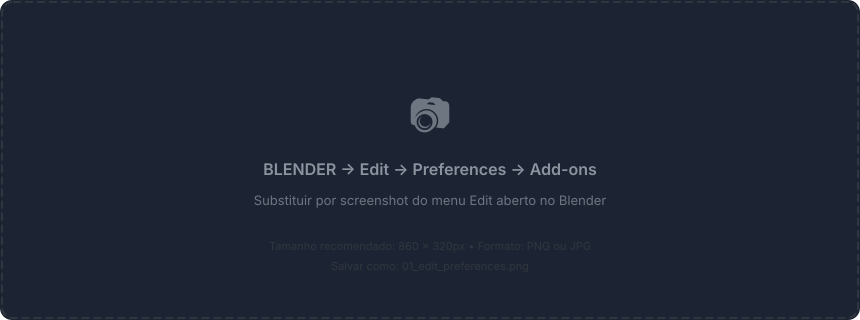
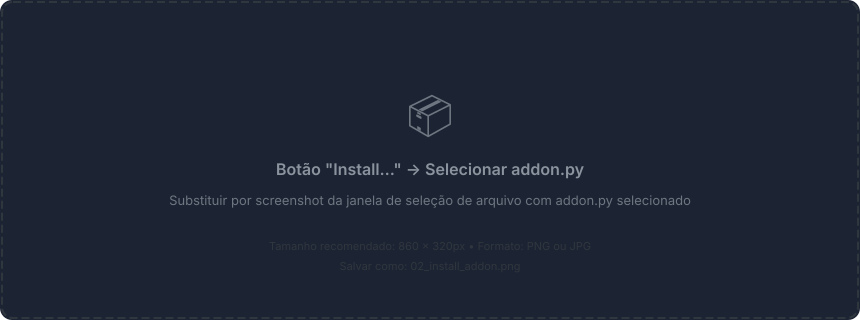
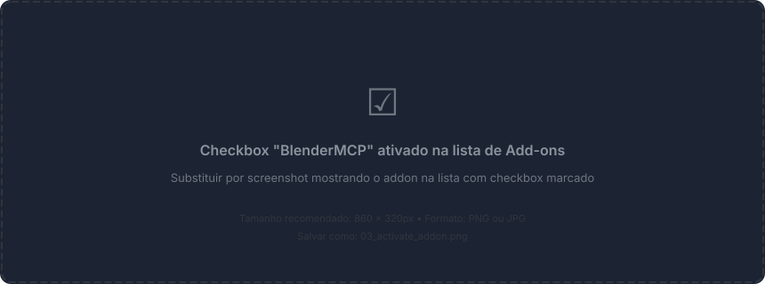
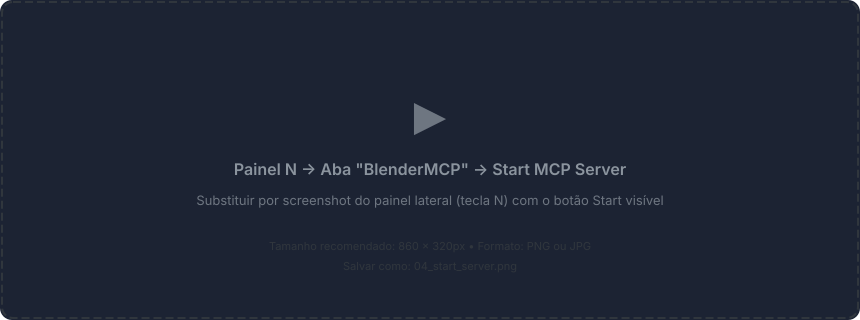
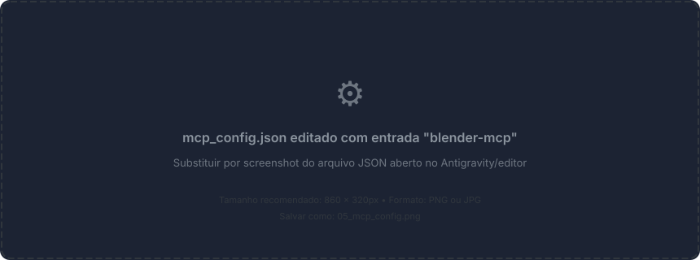
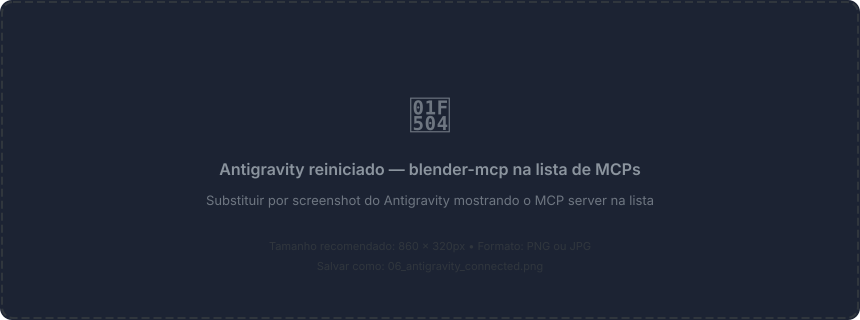
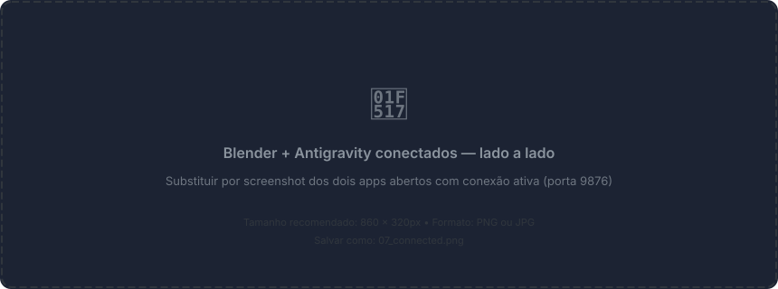
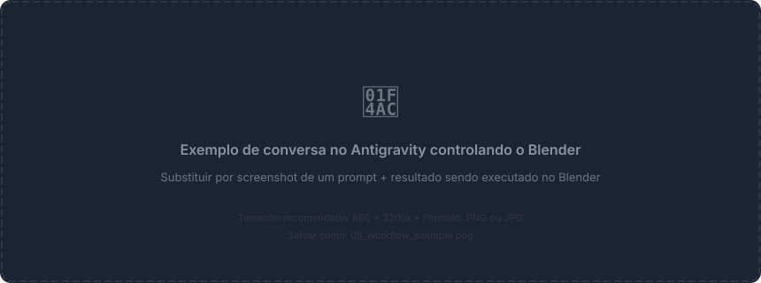

Controle total do Blender via IA — Guia de Instalacao & Referencia Completa
Antes de comecar, certifique-se de ter instalado:
| Software | Versao Minima | Link |
|---|---|---|
| Blender | 3.0+ | blender.org |
| Python | 3.10+ | python.org |
| uv | Ultima | astral.sh/uv |
| Antigravity IDE | Ultima | antigravity.dev |
Se ainda nao tem o uv, instale com: pip install uv ou pipx install uv
No Blender, va em Edit → Preferences → Add-ons

Clique em Install... e selecione o arquivo addon.py localizado em:
D:\_APPS\_Skills_Etc\Blender MCP in Antigravity\addon.py
Apos instalar, ative o addon marcando o checkbox BlenderMCP na lista.

No Blender, abra o painel lateral com N e encontre a aba BlenderMCP. Clique em Start MCP Server.

Quando o status mudar para "Server Running", o Blender esta pronto para receber comandos do Antigravity.
No seu mcp_config.json do Antigravity, adicione a entrada blender-mcp:
{
"mcpServers": {
"blender-mcp": {
"command": "uv",
"args": [
"run",
"--directory",
"D:\\_APPS\\_Skills_Etc\\Blender MCP in Antigravity",
"blender-mcp"
],
"env": {}
}
}
}
Reinicie o Antigravity IDE para que ele carregue o novo MCP server.

Com o Blender aberto e o addon ativado + servidor rodando, o Antigravity se conecta automaticamente via TCP na porta 9876.
1. Abre o Blender → 2. Ativa o addon → 3. Clica "Start MCP Server" → 4. O Antigravity conecta automaticamente

Simplesmente converse com a IA no Antigravity. Ela escolhe automaticamente qual tool usar.
Exemplos de prompts:
"Crie um predio cyberpunk com neon"
→ Usa generate_blueprint(model_type="BUILDING", style="CYBERPUNK")
"Suavize a mesh do cubo"
→ Usa sculpt_mesh(object_name="Cube", operation="smooth")
"Gere um terreno rochoso com seed 42"
→ Usa generate_procedural(proc_type="TERRAIN", seed=42)
"Aplique material de ouro no objeto Sphere"
→ Usa set_material_preset(object_name="Sphere", preset="GOLD")
"Renderize a cena em perspectiva isometrica"
→ Usa render_scene(output_path="...", camera_angle="ISOMETRIC")
"Reduza os poligonos do objeto Robot em 60%"
→ Usa optimize_mesh(object_name="Robot", target_ratio=0.4)
"Busque um modelo de cadeira no Sketchfab"
→ Usa search_sketchfab_models(query="chair")get_scene_infogenerate_blueprint / generate_proceduralsculpt_meshset_material_preset / apply_texture_from_fileoptimize_meshrender_scenebake_textures
Tudo que o Blender MCP + Antigravity consegue fazer
get_scene_infoRetorna informacoes detalhadas da cena: objetos, materiais, cameras, luzes, colecoes.
Uso: "Me mostre o que tem na cena"
Retorno: Lista completa de objetos com posicao, escala, rotacao, bounding boxget_object_infoInformacoes detalhadas de um objeto especifico: vertices, faces, materiais, modificadores.
Parametros:
object_name: "Cube" # Nome do objeto no Blenderget_viewport_screenshotCaptura uma screenshot do viewport atual do Blender e retorna como imagem.
Uso: "Mostre como esta a cena agora"
Retorno: Imagem do viewport atualexecute_blender_codeExecuta codigo Python/bpy arbitrario no Blender. A ferramenta mais poderosa — permite fazer qualquer coisa que o Blender suporta.
Parametros:
code: "import bpy; bpy.ops.mesh.primitive_cube_add()"
Exemplos:
"Crie um cubo na posicao 3,0,0"
"Delete todos os objetos da cena"
"Aplique um modifier Subdivision Surface no objeto ativo"
"Exporte a cena como FBX para C:/exports/scene.fbx"
"Configure o render para Cycles com 256 samples"Esta tool pode executar qualquer codigo Python no Blender. A IA gera o codigo automaticamente com base no seu pedido.
generate_blueprintGera modelos 3D complexos a partir de blueprints pre-definidos com estilos visuais e componentes estruturais.
Parametros:
model_type: BUILDING | WEAPON | VEHICLE | ROBOT | CUSTOM
style: CYBERPUNK | MEDIEVAL | SCIFI | MODERN | FANTASY (opcional)
detail_level: LOW | MEDIUM | HIGH (padrao: MEDIUM)
description: Para CUSTOM — descreva o que criar| Tipo | Componentes | Descricao |
|---|---|---|
| BUILDING | 7+ | Predio com fundacao, corpo, teto, porta, janelas |
| WEAPON | 7 | Arma com receiver, cano, coronha, grip, scope |
| VEHICLE | 9 | Veiculo com carroceria, cabine, rodas, farois |
| ROBOT | 10 | Robo com torso, cabeca, olhos, bracos, pernas |
| CUSTOM | Auto | Usa pattern matching: dragon, dog, human, chair, sword, tree... |
| Estilo | Efeito |
|---|---|
| CYBERPUNK | Neons, pipes, antenas, materiais metalicos, AC units |
| MEDIEVAL | Chamine, tochas, materiais de pedra e madeira |
| SCIFI | Light strips, antena parabolica, metal polido |
Exemplos de uso:
"Crie um predio cyberpunk"
"Gere um robo sci-fi com alto detalhe"
"Crie um veiculo medieval"
"Faca um dragao" → CUSTOM com pattern "dragon"
"Crie uma cadeira" → CUSTOM com pattern "chair"sculpt_meshModifica meshes usando linguagem natural. Usa template matching com 12 operacoes pre-definidas.
Parametros:
object_name: "Cube" # Objeto alvo
operation: "smooth" # Descricao da operacao
intensity: subtle | normal | extreme (padrao: normal)| Operacao | Keywords | O que faz |
|---|---|---|
| SUBDIVIDE | smooth, detail, refine | Adiciona mais vertices para detalhe |
| SPHERIFY | round, sphere, ball | Torna a mesh mais esferica |
| EXTRUDE_UP | horn, spike, point, tower | Extrude vertices para cima (chifres) |
| PUSH_FORWARD | nose, snout, beak, front | Empurra vertices frontais para frente |
| INDENT | eye, socket, hole, cave | Cria indentacoes (olhos, cavidades) |
| SCALE_BOTTOM | base, bottom, wider | Alarga a base do objeto |
| STRETCH_HEIGHT | tall, stretch, elongate | Estica verticalmente |
| FLATTEN_TOP | flat, plateau, table, cut | Achata o topo |
| PINCH_WAIST | waist, narrow, pinch | Estreita o meio (ampulheta) |
| SMOOTH | smooth, soften, blur | Suaviza a mesh |
| NOISE | rough, bumpy, organic, rocky | Adiciona deslocamento aleatorio |
| BEVEL_EDGES | bevel, rounded edges, chamfer | Chanfra arestas vivas |
Exemplos:
"Suavize o cubo"
"Adicione chifres no objeto Head"
"Faca o objeto ficar mais esferico"
"Crie cavidades de olhos na esfera"
"Deixe a base mais larga"generate_proceduralGera objetos procedurais com randomizacao controlada por seed.
Parametros:
proc_type: TREE | ROCK | TERRAIN | BUILDING
style: LOW_POLY | REALISTIC | STYLIZED (padrao: LOW_POLY)
size: Tamanho em unidades Blender (padrao: 2.0)
seed: Seed para reprodutibilidade (opcional)
location_x/y/z: Posicao no mundo (padrao: 0,0,0)
complexity: SIMPLE | MEDIUM | COMPLEX (padrao: MEDIUM)| Tipo | O que gera |
|---|---|
| TREE | Arvore com tronco cilindrico + esferas de folhagem com materiais |
| ROCK | Rocha com ico-sphere deformada aleatoriamente |
| TERRAIN | Terreno com heightmap via sin/cos + noise |
| BUILDING | Predio procedural com N andares + telhado |
Exemplos:
"Gere uma arvore low poly na posicao 5,0,0"
"Crie 3 rochas com seeds diferentes"
"Gere um terreno de tamanho 10"
"Crie um predio complexo de 4 andares"set_material_presetAplica presets PBR prontos com um comando. 11 materiais disponiveis.
Parametros:
object_name: "Cube" # Objeto alvo
preset: "GOLD" # Preset desejado
color_r/g/b: 0.0-1.0 # Override de cor (opcional)| Preset | Metallic | Roughness | Extra |
|---|---|---|---|
| METALLIC | 0.95 | 0.2 | --- |
| PLASTIC | 0.0 | 0.4 | --- |
| GLASS | 0.0 | 0.05 | Transmission 0.95 |
| WOOD | 0.0 | 0.7 | --- |
| STONE | 0.0 | 0.85 | --- |
| FABRIC | 0.0 | 0.9 | --- |
| EMISSIVE | 0.0 | 0.5 | Emission 5.0 |
| MATTE | 0.0 | 0.6 | --- |
| RUBBER | 0.0 | 0.95 | --- |
| GOLD | 1.0 | 0.15 | Cor dourada |
| CHROME | 1.0 | 0.05 | Reflexao espelhada |
apply_texture_from_fileAplica uma imagem como textura em um objeto. Suporta arquivos locais e URLs.
Parametros:
object_name: "Cube"
source: "C:/textures/brick.png" # Caminho local ou URL HTTP
uv_mode: AUTO | BOX | SPHERE | CYLINDER (padrao: AUTO)
tile_x/y: Fator de repeticao (padrao: 1.0)
Exemplos:
"Aplique a textura brick.png no cubo"
"Baixe e aplique textura de https://example.com/wood.jpg no chao"
"Use projecao cilindrica na coluna"set_textureAplica uma textura PolyHaven previamente baixada em um objeto.
Parametros:
object_name: "Floor"
texture_id: "brick_wall_001" # ID da textura PolyHavenrender_sceneRenderiza a cena para um arquivo de imagem com camera automatica.
Parametros:
output_path: "C:/renders/preview.png"
width/height: Resolucao em px (padrao: 512x512)
camera_angle: FRONT | TOP | SIDE | ISOMETRIC | CURRENT (padrao: ISOMETRIC)
samples: Amostras de render (padrao: 32)
transparent: Fundo transparente (padrao: false)
Angulos de camera:
FRONT → Vista frontal (0, -10, 1)
TOP → Vista de cima (0, 0, 10)
SIDE → Vista lateral (10, 0, 1)
ISOMETRIC → Perspectiva isometrica (7, -7, 5)
CURRENT → Usa a camera ativa da cenabake_texturesBake de mapas de textura para exportacao ou uso em game engines.
Parametros:
object_name: "Character"
output_dir: "C:/baked/"
bake_types: "DIFFUSE,NORMAL,AO" # Separados por virgula
resolution: 1024 (padrao)
samples: 64 (padrao)
margin: 4px (padrao)
Mapas disponiveis:
COMBINED | DIFFUSE | NORMAL | AO | ROUGHNESS | METALLIC | EMIT | SHADOWoptimize_meshReduz poligonos via Decimate modifier com controle preciso.
Parametros:
object_name: "HighPoly_Model"
target_ratio: 0.5 # 0.01 a 1.0 (0.5 = 50% reducao)
preserve_uvs: true # Manter UVs (padrao: true)
preserve_bounds: true # Preservar bordas (padrao: true)
symmetry: false # Decimacao simetrica (padrao: false)
Retorno:
Antes: 50000 verts, 25000 faces
Depois: 25000 verts, 12500 faces
Reducao: 50.0%Integracao com PolyHaven — biblioteca gratuita de HDRIs, texturas e modelos 3D.
| Tool | Funcao |
|---|---|
| get_polyhaven_status | Verifica se a integracao esta ativa |
| get_polyhaven_categories | Lista categorias disponiveis |
| search_polyhaven_assets | Busca assets por tipo (hdris, textures, models) |
| download_polyhaven_asset | Baixa e importa um asset no Blender |
Exemplos:
"Busque texturas de tijolo no PolyHaven"
"Baixe o HDRI 'autumn_field' em 2k"
"Aplique a textura 'brick_wall_001' no chao"
"Busque modelos de plantas no PolyHaven"Integracao com Sketchfab — maior biblioteca de modelos 3D do mundo.
| Tool | Funcao |
|---|---|
| get_sketchfab_status | Verifica se a integracao esta ativa |
| search_sketchfab_models | Busca modelos por query + categorias |
| get_sketchfab_model_preview | Preview thumbnail de um modelo |
| download_sketchfab_model | Baixa e importa com escala automatica |
Fluxo:
1. "Busque modelos de cadeira realista" → search
2. "Mostre o preview do primeiro resultado" → preview
3. "Baixe esse modelo com tamanho 1 metro" → download
Parametros do download:
uid: "abc123" # UID do modelo
target_size: 1.0 # Tamanho em metros para a maior dimensaoGeracao de modelos 3D via IA usando Hyper3D Rodin. Gera objetos unicos a partir de texto ou imagem.
| Tool | Funcao |
|---|---|
| get_hyper3d_status | Verifica status e tipo de chave |
| generate_hyper3d_model_via_text | Gera modelo 3D a partir de texto |
| generate_hyper3d_model_via_images | Gera modelo 3D a partir de imagem(ns) |
| poll_rodin_job_status | Verifica progresso da geracao |
| import_generated_asset | Importa o modelo gerado no Blender |
Fluxo:
1. "Gere um modelo 3D de um vaso de ceramica" → generate via text
2. (aguarda conclusao) → poll status
3. Importa automaticamente → import asset
4. Ajusta posicao e escala
Nota: Gera apenas objetos individuais, nao cenas inteiras.Geracao 3D via IA da Tencent. Suporta texto e/ou imagem como input.
| Tool | Funcao |
|---|---|
| get_hunyuan3d_status | Verifica status (OFFICIAL_API ou LOCAL_API) |
| generate_hunyuan3d_model | Gera modelo via texto e/ou imagem |
| poll_hunyuan_job_status | Verifica progresso — status "RUN" para "DONE" |
| import_generated_asset_hunyuan | Importa o modelo OBJ gerado |
Fluxo (OFFICIAL_API):
1. "Gere um modelo 3D de um sapato esportivo" → generate
2. (aguarda "DONE") → poll
3. Importa o OBJ → import
Fluxo (LOCAL_API):
1. Geracao + importacao em um unico passo| Problema | Solucao |
|---|---|
| Conexao recusada | Verifique se o addon esta ativado e o servidor MCP esta rodando no Blender (porta 9876) |
| Tool not found | Reinicie o Antigravity para recarregar os MCP servers |
| Timeout em comandos | Para operacoes pesadas (bake, render), aumente o timeout. O Blender pode levar alguns segundos. |
| PolyHaven/Sketchfab off | Configure as API keys no addon do Blender (painel lateral → BlenderMCP) |
| Hyper3D "insufficient balance" | Trial key tem limite diario. Adquira uma chave em hyper3d.ai ou fal.ai |
| Objeto nao encontrado | Verifique o nome exato com get_scene_info. Nomes sao case-sensitive. |
| uv nao encontrado | Instale via pip install uv e garanta que esta no PATH |
Se algo der errado, peca para a IA: "Verifique a cena e me diga o que tem" — isso executa get_scene_info e ajuda a diagnosticar.